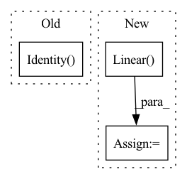

Pattern ID :28672

Before Change
("softmax1", nn.Softmax())
]))
self.pool = nn.Sequential(OrderedDict([("identitypool", nn.Identity())]))
class Trojan_Net_Model(ImageModel):
After Change
self.ly2 = nn.Linear(in_features=8, out_features=8)
self.relu2 = nn.ReLU()
self.ly2_bn = nn.BatchNorm1d(num_features=8)
self.ly3 = nn.Linear(in_features=8, out_features=8)
self.relu3 = nn.ReLU()
self.ly3_bn = nn.BatchNorm1d(num_features=8)
self.ly4 = nn.Linear(in_features=8, out_features=8)
self.relu4 = nn.ReLU()
In pattern: SUPERPATTERN
Frequency: 4
Non-data size: 3
Instances
Fragment ID: 84568234
Project Name: ain-soph/trojanzoo
Commit Name: f0398df1250f8bc1b0536428e7530b3a5213ea03
Time: 2020-08-11
Author: zxz147@psu.edu
File Name: trojanzoo/model/image/trojan_net_models.py
M Class Name: _Trojan_Net_Model
N Class Name: _Trojan_Net_Model
M Method Name: __init__(2)
N Method Name: __init__(2)
M Parent Class: _ImageModel
N Parent Class: _ImageModel
M File Name: trojanzoo/model/image/trojan_net_models.py
N File Name: trojanzoo/model/image/trojan_net_models.py
M Start Line: 14
M End Line: 31
N Start Line: 32
N End Line: 45
'>
Before Change
kernel_sizes=kernel_sizes_out,
)
if exists(kernel_sizes_out)
else nn.Identity(),
)
def get_channels(
After Change
if use_context_time or use_context_features:
context_mapping_features = channels * 4
self.to_mapping = nn.Sequential(
nn.Linear(context_mapping_features, context_mapping_features),
nn.GELU(),
nn.Linear(context_mapping_features, context_mapping_features),
nn.GELU(),
)
'>
Fragment ID: 84568238
Project Name: archinetai/audio-diffusion-pytorch
Commit Name: 3c710edf168da06dcc89c23ef12023d0f8b63043
Time: 2022-09-21
Author: flavio.schneider.97@gmail.com
File Name: audio_diffusion_pytorch/modules.py
M Class Name: UNet1d
N Class Name: UNet1d
M Method Name: __init__(23)
N Method Name: __init__(21)
M Parent Class: nn.Module
N Parent Class: nn.Module
M File Name: audio_diffusion_pytorch/modules.py
N File Name: audio_diffusion_pytorch/modules.py
M Start Line: 823
M End Line: 938
N Start Line: 842
N End Line: 997
'>
Before Change
nn.ReLU(),
nn.Linear(m_dim * 4, 1),
Rearrange("... () -> ..."),
nn.TanH() if norm_coor_weights else nn.Identity()
)
self.rel_coors_norm = CoorsNorm() if norm_rel_coors else nn.Identity()
After Change
self.rel_coors_norm = CoorsNorm() if norm_rel_coors else nn.Identity()
self.to_coors_out = nn.Sequential(
nn.Linear(heads, 1),
Rearrange("... () -> ...")
)
'>
Fragment ID: 84568236
Project Name: lucidrains/en-transformer
Commit Name: af1cb7ebc156c67f0938d915840e079bb3073c24
Time: 2021-03-27
Author: lucidrains@gmail.com
File Name: en_transformer/en_transformer.py
M Class Name: EquivariantAttention
N Class Name: EquivariantAttention
M Method Name: __init__(1)
N Method Name: __init__(1)
M Parent Class: nn.Module
N Parent Class: nn.Module
M File Name: en_transformer/en_transformer.py
N File Name: en_transformer/en_transformer.py
M Start Line: 151
M End Line: 155
N Start Line: 151
N End Line: 162
'>
Before Change
self.bottleneck[0].bias.data.fill_(0.1)
in_features = bottleneck_dim
else:
self.bottleneck = nn.Identity()
in_features = backbone.out_features
self.head = ClassifierHead(in_features, num_classes, use_bottleneck=True, bottleneck_dim=head_bottleneck_dim)
self.use_bottleneck = use_bottleneck
self.num_classes = num_classes
After Change
nn.Linear(width, num_classes)
)
// The adversarial classifier head
self.adv_head = nn.Sequential(
nn.Linear(bottleneck_dim, width),
nn.ReLU(),
nn.Dropout(0.5),
nn.Linear(width, num_classes)
'>
Fragment ID: 84568227
Project Name: thuml/transfer-learning-library
Commit Name: 6715ce965493b31f0defccaf6c0b1a654ffd4a0a
Time: 2020-03-11
Author: JiangJunguang1123@outlook.com
File Name: dalib/adaptation/mdd.py
M Class Name: Classifier
N Class Name: Classifier
M Method Name: __init__(5)
N Method Name: __init__(6)
M Parent Class: nn.Module
N Parent Class: nn.Module
M File Name: dalib/adaptation/mdd.py
N File Name: dalib/adaptation/mdd.py
M Start Line: 130
M End Line: 148
N Start Line: 81
N End Line: 113